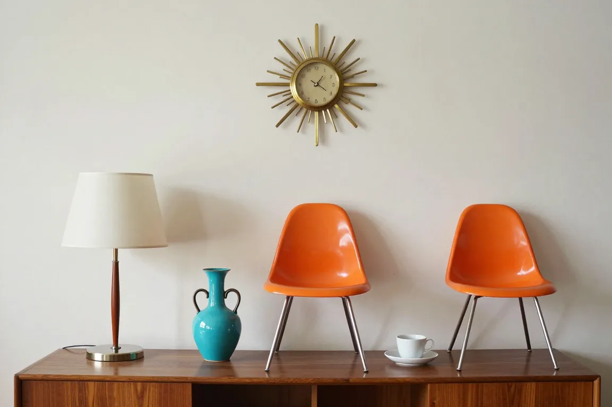

промышленный дизайн · 1945–1975 · также: Дизайн атомного века, Американский модернизм, Итальянский послевоенный дизайн
Послевоенные предметы обихода из формованной фанеры, стеклопластика, стального прута и эмали, в органических кривых и ярких акцентах, выпущенные американскими мебельными фирмами и небольшими итальянскими мастерскими.

Главная идея
Новые материалы военной экономики дают новый вид вещи: лёгкий, изогнутый, яркий и достаточно дешёвый для нового пригородного дома.
Принципы дизайна
Формуйте фанеру, стеклопластик или пластик в составную кривую, которая подходит телу.
Ставьте каждую оболочку на тонкое основание из стального прута, нагеля или сужающегося дерева сечением 10–25 мм.
Берите органические контуры: почку, бумеранг, яйцо и диск.
Сочетайте тёплый орех или тик с холодной деталью из хрома, латуни или эмали.
Добавляйте в каждый комплект один насыщенный цвет: оранжевый, бирюзовый, горчичный или красный.
Делайте каждую вещь модулем системы, которую покупатель может комбинировать и расширять.
Проектируйте вещь под серийное производство на фабрике и показывайте способ производства в форме.
Берите глянцевую отделку 40–80 GU на формованных и эмалированных деталях.